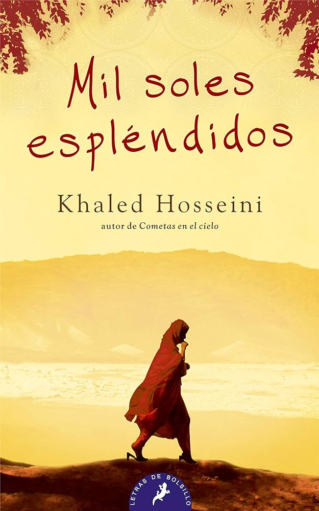

Mil soles espléndidos
Género: Drama
Autor: Khaled Hosseini
Año de publicación: 2007
Link de compra: AMAZON
Género: Drama
Autor: Khaled Hosseini
Año de publicación: 2007
Link de compra: AMAZON
En la conmovedora epopeya "Mil soles espléndidos" de Khaled Hosseini, Afganistán se convierte en un escenario vibrante donde se entrelazan las vidas de dos mujeres, Mariam y Laila, en medio de décadas de conflicto y transformación social.
La narrativa comienza en la década de 1970, cuando la vida de Mariam, una mujer de origen humilde, se cruza con la de Laila, una joven de clase alta. La amistad improbable entre estas mujeres, forjada en medio de la opresión y la violencia, se convierte en el núcleo de una historia que abarca desde la invasión soviética hasta el ascenso del régimen talibán.
Hosseini, con su prosa evocadora, nos lleva por los callejones polvorientos de Kabul, explorando no solo el impacto devastador de la guerra en Afganistán sino también la resistencia y el amor que florecen en las condiciones más adversas. Los personajes, ricamente desarrollados, se enfrentan a tragedias insondables mientras buscan la redención y la esperanza en un mundo que parece desmoronarse a su alrededor.
"Mil soles espléndidos" no solo es una novela histórica impactante, sino un testimonio apasionado de la fuerza la perseverancia de las mujeres afganas. A través de la narrativa absorbente, Hosseini invita a los lectores a reflexionar sobre la complejidad de la condición humana y las consecuencias inquebrantables del amor y la lealtad en tiempos tumultuosos. En esta odisea conmovedora, cada página resplandece con la esperanza de un nuevo amanecer, incluso en los momentos más oscuros.